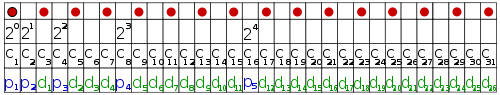

Today, we have a lot of data that is stored or transferred in a binary way. Once in a while an error occurs and single bits get switched from 0 to 1 or the other way around. Coding theory tries to find algorithms with which you can detect and correct errors.
Introduction
To keep it simple, we make a small example. We have
Hamming codes
Hamming codes are a family of \((2^k - 1, 2^{(2^k -1)-k}, 3), \quad k \geq 2\) codes. This means, every Hamming code can only correct one error.
The idea behind Hamming codes is to save in one bit if the number of a fixed set of positions of the message is even or odd. This is called parity and done with XOR. The parity-bit is saved at the end of the message (or, just another point of view: the positions that are powers of two (1, 2, 4, 8, ...) of each message are only parity bits. These are obviously \(\lceil \log_2(\text{length of code}) \rceil = \lceil \log(2^k - 1) \rceil = k\)).
Wikipedia has a really nice image for that:
{kind=link}

Now, how are the parity-bits calculated? Well, think of each message as a vector in \(\{0,1\}^{(2^k - 1) - k}\). Then you define a matrix \(G \in \{0,1\}^{2^k - 1} \times \{0,1\}^{(2^k - 1) - k}\). Now you can get the codewords \(c\) by multiplying the datawords \(d\) (messages) with \(G\): \(c = G \cdot d\). This is the reason why Hamming-Codes are called "linear codes". They can be obtained by a linear function.
How do I get the generator-matrix \(G\)? I don't know it and my internet searches didn't reveal any solution. Do you know one?